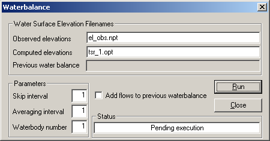

Water Balance Utility¶
Primary author: Tom Cole
The water balance utility can be used for lakes and reservoirs in which water surface elevations are a function of inflows and controlled outflows. The utility computes the flows necessary to match observed water surface elevations (typically taken at the dam) and outputs them to the qwb.opt file. This file contains a time series of Julian day and inflow (m³ s⁻¹). The flows can be either positive or negative.
Temperatures and/or constituent concentrations must also be provided in the corresponding temperature and constituent concentration input files if the computed flows are incorporated as inflows to the system. The water balance utility does not provide this information; it must be provided by the user depending on how the computed flows are incorporated into the simulation. Considerable thought should go into how best to incorporate temperature and constituent concentrations, as discussed in the Incorporating Computed Flows into the Simulation section below.
Two versions of the utility are available:
- Graphical user interface (GUI) application - a Windows dialog-based program for interactive use
- Console application - a command-line program that reads an input file, suitable for batch processing
GUI Application¶
Running the Program¶
When the executable is run, a dialog box appears with editable fields for the input parameters. The executable runs under the Windows operating system only. Default values populate the edit boxes when the dialog first appears. Edit each field as needed, then select Run to execute the water balance computation.

Input Parameters¶
Observed Elevations Filename¶
This file consists of a Julian day and observed water surface elevation. The format is similar to all other CE-QUAL-W2 time-varying inputs, with eight columns each for the JDAY and ELO values. The utility will also read values using variable field lengths as long as the JDAY and ELO values are separated by a space.
The first three lines are skipped as header lines. An example file is shown below:
2000-2001 Oologah Reservoir observed water surface elevations
JDAY ELO
90.792 195.453
90.833 195.456
90.875 195.459
90.917 195.441
90.958 195.444
91.000 195.450
91.042 195.441
91.083 195.441
91.125 195.447
91.167 195.441
91.208 195.444
91.250 195.438
91.292 195.432
Tip
Data need not be at regular intervals, but avoid repeating the same values over a time interval. Better results are obtained if duplicate consecutive values (such as the water surface elevation at day 91.083 above) are removed.
Note
The degree of accuracy in the observed elevations can affect the computed flows. Ensure that the observed water surface elevations have sufficient precision for your application.
Computed Elevations Filename¶
This is the model time series output file (tsr_*.opt) containing the computed water surface elevations. The water balance utility reads the JDAY and ELWS columns from this file.
An example of the time series output file format is shown below (columns to the right are not shown):
JDAY, DLT, ELWS, ...
92.000, 456.39, 195.37, ...
93.000, 952.28, 195.28, ...
94.000, 494.28, 195.27, ...
95.000, 34.43, 195.17, ...
96.000, 170.88, 195.08, ...
97.000, 211.93, 194.99, ...
98.000, 255.11, 194.92, ...
99.000, 1459.08, 194.78, ...
Warning
Turn on time series output in the model control file and specify the segment at which the water surface elevation values are output. For reservoirs, this is typically the segment next to the dam. See the Time Series output file discussion in the control file documentation for details.
Previous Water Balance Filename¶
If the "Add to previous water balance" option is used, specify the existing water balance output file for the computed flows to be added to.
Skip Interval¶
Some reservoirs have considerable noise in the observed water surface elevation data, such as from peaking hydropower operations. If water surface elevations are available on an hourly interval, the resulting flows generated by the water balance utility can have large positive and negative values that are unrealistic compared to using observed elevations on a daily basis.
To smooth out the computed flows, use a skip factor. For example, a skip factor of 24 results in computed flows on a daily basis, with all of the "noise" generated by hydropower operations ignored over the 24-hour period.
Averaging Interval¶
This option computes a running average of the water surface elevation to smooth out "noise" in the input values. Consider a system with no inflow or outflow but with considerable wind seiching. The water balance utility would compute alternating inflows and outflows that, depending on the amount of seiching, could be very large when in reality no flows should be added to or subtracted from the system. A running average, alone or in combination with skipping over a number of observed elevations, can help alleviate many of the problems caused by an automated water balance computation.
Waterbody Number¶
In the case of multiple waterbodies, each with a separate bathymetry input file, specify which waterbody (and thus which bathymetry file) the water balance is being computed for. This capability is necessary for modeling systems with multiple reservoirs.
Incorporating Computed Flows into the Simulation¶
The water balance utility outputs computed flows to the qwb.opt file. These flows are computed as a step function. If they are incorporated into the model as an additional inflow or outflow whose current values are linearly interpolated, such as a branch inflow, the resulting water balance will not be correct.
Recommended Approach: Distributed Tributary Inflow¶
Typically, the flows in the qwb.opt file are included as a distributed tributary inflow assigned to the mainstem branch, with interpolation [DTRIC] set to OFF. Set the corresponding distributed tributary inflow temperatures in the qdt_br1.npt file, usually to observed air temperatures.
Using a distributed tributary minimizes the impact of the flow, temperature, and water quality on the simulation by distributing the flow throughout all segments in a branch, weighted by surface area.
Warning
Be aware that large flows resulting from large errors in inflow/outflow measurements can have a significant impact on temperature and water quality calibration in the surface layers. Usually this is not a problem, but sensitivity analyses should be conducted to verify that the flow and associated temperature/constituent concentrations do not adversely affect simulation results.
Constituent Considerations for Water Quality Runs¶
When running water quality, take care in selecting which constituents to include in the corresponding inflow constituent concentration file:
- Typically, only dissolved oxygen (DO) values are included if the distributed tributary option is used, set to saturated values corresponding to the observed air temperatures.
- If the water balance flows are incorporated as branch inflows, the mass loading of organic matter and nutrients will also increase.
Note
Negative flows use temperatures and concentrations from within the waterbody rather than the values in the corresponding inflow temperature and constituent concentration files. This ensures that negative flows generate no change in temperature or constituent concentrations. However, positive flows can impact simulation results, and care must be taken as to how they are incorporated into the simulation.
Strategies for Incorporating Flows¶
The best method for incorporating computed flows depends on the characteristics of the flows:
- Consistently negative flows indicate that either inflows are consistently overestimated or outflows are consistently underestimated. Incorporating the flows as a positive increase in the outflows, as opposed to subtracting them from the inflows, can potentially have a significant impact on simulation results. For example, if hypolimnetic temperatures are consistently underestimated, incorporating the flows into a hypolimnetic outflow could improve results. Conversely, if hypolimnetic temperatures are overpredicted, the inflows should probably be reduced. Conduct sensitivity analyses to determine which method improves results.
- Consistently positive flows in a branch with significant ungauged inflows suggest that a sensitivity analysis should be performed to determine if incorporating the flows (or a portion of them) into the ungauged branch inflow improves model results.
The model itself can often serve as a guide for how best to incorporate the computed flows. Multiple approaches should generally be tested.
Iterative Refinement¶
For various reasons, the water balance utility may not perfectly close the water balance on the first iteration. Depending on the discrepancies between computed and observed elevations, you may need to iterate by:
- Run the model using the output from the first water balance computation.
- Run the water balance utility again on the new time series water surface elevations.
- Save the resulting output file for incorporation into the model.
For a system with multiple branches, each iteration of the utility produces a separate file that can be incorporated as a distributed tributary for a different branch (branch 2, then branch 3, etc.).
For a system with only one branch, use the "Add to previous water balance" option. This adds the new flows to the previously computed flows and incorporates them as an improved distributed tributary inflow file.
Tip
For most simulations, the flows from a single iteration generate water surface elevations sufficiently close to the observed values. Rarely, manual adjustment of the generated flows may be required, typically only when observed water surface elevations change significantly over a short time period.
Example from Tom Cole¶
Walter F. George is a U.S. Army Corps of Engineers (USACE) reservoir located on the Chattahoochee River in Alabama. The reservoir is operated as a peaking hydropower facility. During calibration, the model consistently underpredicted hypolimnetic temperatures by 0.5--1 °C. Wind sheltering could be adjusted to increase hypolimnetic temperatures, but this adjustment always adversely impacted thermocline depth.
After considerable thought, it was concluded that including possible seepage at the dam might improve hypolimnetic temperature predictions. A portion of the distributed tributary flows were incorporated as an additional outflow at the bottom of the dam. The final value used was 5 m³ s⁻¹, which was less than 1% of the average outflows and brought hypolimnetic temperatures into almost exact agreement with observed temperatures.
Further investigation of the outflows revealed that during times of no power generation, an additional flow of 5.1 m³ s⁻¹ was specified in a file that was not originally sent as part of the outflow data. Thus, the model pointed the way as to how best to incorporate the computed flows and was a surprisingly accurate indicator of what was occurring in the prototype.
Console Application¶
A console application that reads an input file is also available to perform the water balance. This version provides the following advantages over the GUI application:
- It is not a Windows dialog box-driven application, so it can be used in batch files.
- There is an input file for model parameters and an output file for model errors.
- There is greater flexibility over file naming, the number of header lines to skip in input files, and the number of waterbodies to use in the analysis.
Input File: WatBal.npt¶
The input file WatBal.npt must be placed in the same directory as the executable. The file has the following format:
Water Balance input file for Console Application
"el_obs.npt" , file for observations, time and water level time series in 2 columns
"tsr_8_seg36.opt" , tsr file for model predictions-assuming only one line skipped in
file_header
"qwb1.npt" , Output file name
1 , NSKIPS - number of skips of data
1 , NAV - averaging interval, number of data points to average
1,1 , waterbody to perform water balance: JW1:STARTWB,JW2:ENDWB:1,2=WB1&2;1,1==WB1
ONLY
3 , number of lines to skip in the header for the water level data file
0 , past water balance PWB file: Yes==1, No==0
"qwb.npt" , Previous Water Balance file name
Each line contains a value followed by a comma-delimited description. The parameters are described in the following table:
| Line | Parameter | Description |
|---|---|---|
| 1 | (header) | Title line, skipped during reading |
| 2 | Observed elevations file | Filename for observed water level time series (JDAY and elevation in 2 columns) |
| 3 | Computed elevations file | Filename for model-predicted time series (tsr_*.opt file); assumes one header line is skipped |
| 4 | Output file name | Filename for the computed water balance flow output |
| 5 | NSKIPS |
Number of data points to skip between computed values (skip interval) |
| 6 | NAV |
Averaging interval; number of data points over which to compute a running average |
| 7 | Waterbody range | Start and end waterbody numbers (JW1,JW2). Use 1,1 for a single waterbody, 1,2 for waterbodies 1 and 2, etc. |
| 8 | Header lines to skip | Number of lines to skip in the header of the observed water level data file |
| 9 | Past water balance flag | Set to 1 to add flows to a previous water balance file, or 0 to compute a new water balance |
| 10 | Previous water balance file | Filename of the previous water balance file (used only if the past water balance flag is 1) |
Note
If performing the water balance over multiple waterbodies, all waterbodies must have the same grid (i.e., ELBOT and vertical spacing must be the same). Currently, all flow correction is written to a single water balance file. A future option will allow distribution across multiple water balance files for several waterbodies.
Output File: WatBal_Errors.opt¶
If errors occur during execution, they are written to the WatBal_Errors.opt text file. If no errors occur, this file is not written to disk.
An example of the error file output:
Output File: el_stats.opt¶
This output file displays model error statistics for the water level and the average flow rate in the qwb output file. Typical output from this program:
N Mean Error Absolute ME RMS Error
238 0.00 0.00 0.00
Average water balance flow correction = .00 m^3/s for period covering Julian day 1.04 to
239.94
The statistics reported are:
- N - number of data points used in the comparison
- Mean Error - mean error between observed and computed water surface elevations
- Absolute ME - mean absolute error
- RMS Error - root mean square error
- Average water balance flow correction - mean flow rate (m³ s⁻¹) over the simulation period
Output File from Water Balance¶
The main output file from the water balance utility is a time series of flows (m³ s⁻¹) necessary to match the observed water level. A typical output file is shown below:
Computed flow to complete water balance
1 1
JDAY QWB
1.040 0.00
2.000 24.34
3.000 2.33
4.000 2.34
5.000 3.72
6.000 2.33
7.000 4.67
8.000 2.34
9.000 3.71
10.000 3.29
11.000 4.66
12.000 2.34
13.000 3.69
14.000 2.34
15.000 3.32
16.000 3.31
17.000 3.49
The file header contains a title line, the waterbody number, and column headers (JDAY and QWB). This file is used as input to the model, typically as a distributed tributary inflow file.
Running the Console Application¶
Run the water balance utility by executing the appropriate executable for the Windows operating system:
- 32-bit:
WBconsole32.exe - 64-bit:
WBconsole64.exe
The input file WatBal.npt must be in the same directory as the executable.